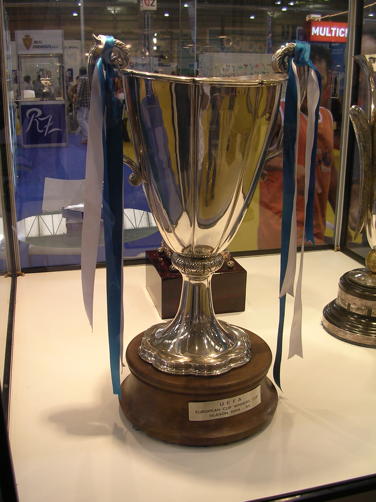

RECOPA DE EUROPA

La Recopa de Europa se inicio en 1960 y finalizo en 1999, se trataban de una competicon reservada para los campeones de copa de cada pais.
RANKING DE MAXIMOS GANADORES
| EQUIPO | COPAS |
|---|---|
| Barcelona (ESP) | 4 |
| Anderlecht (BEL) | 2 |
| Milan (MIL) | 2 |
| Dinamo Kiev (RUS) | 3 |
| Chelsea (ING) | 2 |
| Atletico Madrid (ESP) | 1 |
| Rangers (ESC) | 1 |
| Arsenal (ING) | 1 |
| Fiorentina (ITA) | 1 |
| West Ham (ING) | 1 |
| Hamburgo (ALE) | 1 |
| Ajax (HOL) | 1 |
| Sampdoria (ITA) | 1 |
| Parma (ITA) | 1 |
| PSG (FRA) | 1 |
| Tottenham (ING) | 1 |
| Sporting CP (POR) | 1 |
| Borussia Dortmund (ALE) | 1 |
| Bayern Munich (ALE) | 1 |
| Bratislava (ESL) | 1 |
| Manchester City (ING) | 1 |
| Magdeburg (ALE) | 1 |
| Dinamo Tbilisi (GEO) | 1 |
| Aberdeen (ESC) | 1 |
| Juventus (ITA) | 1 |
| Everton (ING) | 1 |
| Mechelen (BEL) | 1 |
| Manchester United (ING) | 1 |
| Werder Bremen (ALE) | 1 |
| Real Zaragoza (ESP) | 1 |
| Lazio (ITA) | 1 |
TODOS LOS GANADORES
| AÑO | EQUIPO |
|---|---|
| 1998/99 | Lazio (1) |
| 1997/98 | Chelsea (2) |
| 1996/97 | Barcelona (4) |
| 1995/96 | PSG (1) |
| 1994/95 | Zaragoza (1) |
| 1993/94 | Arsenal (1) |
| 1992/93 | Parma (1) |
| 1991/92 | Werder Bremen (1) |
| 1990/91 | Manchester United (1) |
| 1989/90 | Sampdoria (1) |
| 1988/89 | Barcelona (3) |
| 1987/88 | Mechelen (1) |
| 1986/87 | Ajax (1) |
| 1985/86 | Dinamo Kiev (2) |
| 1984/85 | Everton (1) |
| 1983/84 | Juventus (1) |
| 1982/83 | Aberdeen (1) |
| 1981/82 | Barcelona (2) |
| 1980/81 | Dinamo Tbilisi (1) |
| 1979/80 | Valencia (1) |
| 1978/79 | Barcelona (1) |
| 1977/78 | Anderlecht (2) |
| 1976/77 | Hamburgo (1) |
| 1975/76 | Anderlecht (1) |
| 1974/75 | Dinamo Kiev (1) |
| 1973/74 | Magdeburg (1) |
| 1972/73 | Milan (2) |
| 1971/72 | Rangers (1) |
| 1970/71 | Chelsea (1) |
| 1969/70 | Manchester City (1) |
| 1968/69 | Slovan Bratislava (1) |
| 1967/68 | Milan (1) |
| 1966/67 | Bayern Munich (1) |
| 1965/66 | Borussia Dortmund (1) |
| 1964/65 | West Ham (1) |
| 1963/64 | Sporting CP (1) |
| 1962/63 | Tottenham (1) |
| 1961/62 | Atletico Madrid (1) |
| 1960/61 | Fiorentina (1) |